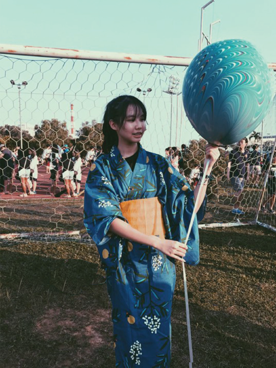

Welcome to my portfolio! I am a third-year student at the Royal Melbourne Institute of Technology.
My expertise is in the field of Digital Media and I have a curated collection of some of my best work featured below.
I am a passionate sports fan primarily in basketball, soccer and F1. I enjoy it the most when I am able to combine
both my passion for sports and skills in Digital Media together.
Education
Diploma in Interactive & Digital Media, Republic Polytechnic Singapore
2016-2019
Bachelor of Design (Digital Media), Royal Melbourne Institute of Technology (RMIT), Australia
2022-2024
Republic Polytechnic
Colours
Dark Icons is a concept thought up for my Studio assisgnment which pairs a suite of icons and sound to create an overarching theme
relating to physical and psychological trauma. The icons were designed in Adobe Illustrator and the sounds were sourced and coded in Visual Studio Code.
Image Vector
This is a vector illustration of me, referenced through a photo of myself. I worked on this using Adobe Illustrator. I managed to do this by using the pen tool to outline the photo and used the eyedropper tool to find the colour to match each section of the photo. For the neck area, in order to create a more realistic look, I used the blur effect to blend in the shades of grey which gives a bit of depth to the neck area.
The Mad Scientist (1 Giant Me; 7 Mini Me)
This artwork was created under the concept of a movie poster where I utilized Adobe Photoshop to create interactions between a "giant" iteration of myself and 7 other miniature versions of me. The idea behind this artwork was inspired by a 3D platformer video game called Little Nightmares. One challenge I faced while creating this piece was cropping the images of myself as well as having the pictures all taken while the angle of the sunlight remains unchanged.
dREam Magazine Spread
For this piece of a magazine cover spread, I was involved in a session of photo taking and I had the brilliant idea to mimic the book cover for “The Fault In Our Stars”. With the help of my two classmates, I managed to snap a photograph which depicted the idea. The second part of the work was done through photo-editing in Adobe Lightroom to remove and fix up flaws in the photograph and add the rest of the elements such as the magazine logo and school logo plus some text to depict an actual magazine spread.
Haunted House
This image was created using Adobe Photoshop. The objective behind this artwork was to identify the elements of creating a haunted and eerie atmosphere and making use of colour and texture related to the theme and transform the environment of the photo to give off that mood. The tools in Adobe Photoshop that was covered for this work were the Lasso, Polygonal Lasso, Magnetic Lasso and the Selection tools. Additionally, the Hue and Saturation, Colour Balance and Levels effects were used to achieve the desired result.
Pizza Brochure
For this artwork, the aim was to create a fictional pizzeria brochure done mainly using Adobe inDesign. The logo of the pineapple was created using Adobe Illustrator which I utilized Illustrator's built-in effects to create the pineapple's texture. The main purpose of doing so is to tackle the challenge of designing a brochure step by step such as designing the brochure draft at the beginning and deciding on the appropriate software to carry out and deliver the design. Additionally, understanding the requirements and dimensions of a brochure also come into play.
My Precious
Autodesk Maya is a 3D modelling and animation software I had employed in order to create this media work. The concept behind this 3D model was to utilize Autodesk Maya's modelling tools to duplicate a sentimental object into a 3D modelled art piece. In this case, I opted to 3D model a watch which was given to me as a birthday gift to me from my mother. The watch was a reminder for me that time is precious and that I should spend in wisely in order to achieve my aspirations and ambitions.
Coffee Indulgence
I used a combination of both Adobe After Effects and Adobe Photoshop softwares to create this media work. Before I began editing on Adobe After Effects, the picture of the coffee mug had water droplet stains on the table and in order to remove the water droplet stains for the purpose of this work, I used Clone Stamp tool on Adobe Photoshop to edit out. The area of focus was on Particle Systems and Masking tool on Adobe After Effects. The Fractal Noise effect on Adobe After Effects was also used to create swirling liquid coffee effect and the hot steam was created using Particle Playground and the Blur effect.
Open Waters
In this media work, I used Autodesk Maya once again to display the motion and physics of moving aquatic plants under the ocean, underwater lighting and movement of a 3D animation of a fish swimming through the open waters of the ocean. To achieve this, I used Autodesk Maya's 3D modelling tools to create the character of the fish and subsequently Autodesk Maya's 3D animation tools to animate the fish's swimming motion as well as some presets to create the underwater environment.
For this project, I created a suite of icons paired with sound design. Utilizing Adobe Illustrator to create the icons and using a mixture of sound recordings and audio files sourced from royalty-free websites,
I designed the webpage to incorporate the icons using Visual Studio Code. The icons are meant to represent the brutish nature of life and the sound design incorporated
is meant to compliment the icons.
UI/UX app design
For this project, I had identified a problem that I was struggling with and designed a prototype of an application
which could alleviate that problem.
To design the interface of the app and simulate the flow of user experience for the app prototype, I used Figma which is collaborative web application for interface design.
1st click test & 5 second test
The first click test & 5 second test was to determine how effective the interface design is
such that the user instinctively knows where to navigate and that the interface makes sense visually.
The test was carried out via usabilityHub which has rebranded itself to Lyssna and is hosted online.
Sister Cities: Collaborative effort in user interface & user experience design for web
This project consisted of a collaborative effort between 4 to 5 members of a group to
design an intriguing and unique website focussed on delivering a hybrid informative experience
about the cities of Melbourne, Australia and Ho Chi Minh, Vietnam. The process involved ideating and research
into the content as well as design ideas for the website. We then created the prototype in blender and Adobe XD.
Trapped in the army
This environment was inspired by my time in the military where I recall having to follow strict regimentation.
The items were placed at the center of the room in line with user interface and user experience since the contrast
of the items at the center of the room compared to everything else around it.
Hand-In-Health
This video was focussed more as an infomercial about an educational product which narrates the story of refugees during the Covid
pandemic and is delivered in the form of an interactive video which is meant to educate the audience about the issue. The final
piece is a protytpe that was meticulously developed throughout the a process of brainstorming, research, mock-ups and project plans.
Mr Moon's LUNAverse
For this project I had to design a prototype for a new digital experience which targets a specific
group of visitors to Luna Park. This project was also a team effort which meant collaboration was needed and I was tasked
to be the team coordinator. The project consisted of using a collection of Adobe Suite softwares such as Adobe Illustrator,
Adobe Photoshop, Adobe Premiere Pro and Adobe After Effects.
Little Blade Riding Hood
This was primarily a sound design work which consisted of me designing a soundtrack to fit the concept of the video.
The music track which I designed was heavily inspired by the phonk genre and I added aditional sound effects simulating
the elements in the video to compliment the track. I used the sound software, Reaper, to create the track.
Earcon Design for CookIt app
Another sound design project that I cooked up (no-pun intended), was to design earcons for a cooking app called CookIt.
I did a lot of research into the technicalities behind earcons and what makes a good earcon design as well as sourcing for inspiration
be it from music or other forms of sounds. The final product was eventually created using Reaper.
Personal Works
Photoshop: Removing background elements
Before
This is a picture of my friend who had requested for the three boys in the background to be removed

After
This is the result after I had edited the photo on Adobe Photoshop. I did so by using the quick selection tool to select out the boys in the background and by using the clone stamp tool was able to paint over the boys, including the shadows, to edit out of the background and maintain the nature of the photo as much as possible. Although there is a portion of the edited photo where a repetition can be seen, upon gaining the feedback from our mutal friends, the repetition is only visible if a great deal of attention had been spent looking at the photo.
Adobe After Effects: Stranger Things Intro
I came to making this media piece after a close friend of mine had requested for help to make an intro for her Youtube video. Having come across a website which transforms your name into the Stranger Things title card, I was able to achieve this with the help of Adobe After Effects. The primary tools used to create the effect was using the translation tool on Adobe After Effects to animate the position of the fonts and adding the glow effect onto the letters.
Kpop lore artwork (South Park artstyle)
This was a self-pursued project in which I spent a month to research and compile a kpop group's lore and translate
them all into a single artwork which used a similar style of art to the adult-swim cartoon South Park. The artwork was created primarily
through the use of Adobe Illustrator. For context purposes, the kpop group is called Billlie and their musical concept comprises
of a strong narrative background riddled with its own lore.
Journal Friends
This was another self-pursued project where I had photographed the animal statues from
my student acomodation and photoshopped them into a caution poster. The idea came about from a conversation I had
with the building's Assistant General Manager, Katie Lonard, whereby she had lamented how the statues were treated
poorly and I had asked her if she had given them any names to which she said she has not.
Sketches & Drawings
These are some of the drawings and sketches I had kept from back when I was in middle school which showed my interests at the time and
some of which have lasted to this day.
Neat
This art piece titled Neat was the creation of a word play associated with drinks, whereby the term neat is used to describe a drink served in its original state without any additional ingredients. In addition, this was an art piece I drew during Valentine's Day to fit the theme.
Overhead kick
As an avid football fan, there were many legendary football moments that I felt inspired to transform into art pieces. One such moment was Didier Drogba's overhead goal-line clearance for Ivory Coast against Senegal in November 2013.
McLaren P1
Bugatti Veyron
Koenigsegg Agera R
Hennessey Venom GT
Rise Higher
I drew this out of inspiration from the video game Infamous Second Son where the main character has the ability to manipulate smoke. I drew this as one of the submissions for my class T-shirt design for secondary three. Although my design was not chosen, it is one of the works I'm proud to have done.

/C318_P04_Colours.jpg)
/Vector Illustration.jpg)
/c318 msa/the mad scientist.jpg)
/Fault_In_Our_RP.jpg)
/C318_p05.jpg)
/DLBrochure_p12_KenWui.jpg)
/DLBrochure_p12_KenWui2.jpg)